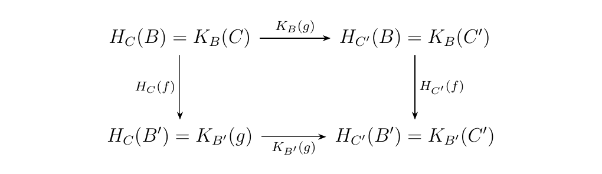

2.2. Products of Categories, Functors
As one may expect, the product of categories can be easily defined.
Let \(\cc\) and \(\dd\) be categories. Then the product category \(\cc \times \dd\) is the category where
- Objects. All pairs \((C, D)\) with \(C \in \ob(\cc)\) and \(D \in \ob(\dd)\)
- Morphisms. All pairs \((f, g)\) where \(f \in \hom(\cc)\) and \(g \in \hom(\dd)\).
To define composition in this category, suppose we have composable morphisms in \(\cc\) and \(\dd\) as below.
 Then the morphisms \((f, g)\) and \((f', g')\) in \(\cc \times \dd\)
are composable too, and their composition is defined as \((f', g') \circ (f , g) = ( f' \circ f, g' \circ g)\).
Then the morphisms \((f, g)\) and \((f', g')\) in \(\cc \times \dd\)
are composable too, and their composition is defined as \((f', g') \circ (f , g) = ( f' \circ f, g' \circ g)\).
We also define the projection functors \(\pi_\cc: \cc\times\dd \to \cc\) and \(\pi_\dd: \cc\times\dd \to \dd\) where on objects \((C, D)\) and morphism \((f, g)\), we have that
These projection functors have the following property. Consider a pair of functors \(F: \bb \to \cc\) and \(G:\bb \to \dd\). Then \(F\) and \(G\) determine a unique functor \(H: \bb \to \cc \times \dd\) where
That is, we see that for any morphism \(f\) in \(\bb\) we have that \(H(f) = ( F(f), G(f) )\). Hence the following diagram commutes
and we dash the middle arrow to represent that \(H\) is induced, or defined, by this process.
We can also take the product of two different functors.
Let \(F: \cc \to \cc'\) and \(G: \dd \to \dd'\) be two functors. Then we define the product functor to be the functor \(F \times G: \cc \times \dd \to \cc' \times \dd'\) for which
- 1. If \((C, D)\) is an object of \(\cc\times\dd\) then \((F\times G)(C, D) = (F(C), G(D))\)
- 2. If \((f, g)\) is a morphism of \(\cc\times\dd\) then \((F \times G)(f,g) = (F(f), G(g))\)
Additionally, we can compose the product of functors (of course, so long as they have the same number of factors). Thus suppose \(G,F\) and \(G', F'\) are composable functors. Then observe that
Note that in this formulation we have that
Hence, we have the following commutative diagram.
Again, the dashed arrow is written to express that \(F \times G\) is the functor defined by this process and makes this diagram commutative.
If \(F\) is a functor such that \(F: \bb \times \cc \to \dd\), that is, its domain is a product category, then \(F\) is said to be a bifunctor.
An example of a bifunctor is the cartesian product \(\times\), which we can apply to sets, groups, and topological spaces. In these instances we know that value of a cartesian product is always determined uniquely by the values of the individual factors, which holds more generally for bifunctors.
Let \(\bb, \cc\) and \(\dd\) be categories. For \(B \in \bb\) and \(C \in \cc\), define the functors
such that \(H_C(B) = K_B(C)\) for all \(B, C\). Then there exists a functor \(F:\bb \times \cc \to \dd\) where \(F(B, -) = K_B\) and \(F(-, C) = H_C\) for all \(B, C\) if and only if for every pair of morphisms \(f:B \to B'\) and \(g:C\to C'\) we have that
Diagrammatically, this condition is

The proof is left as an exercise for the reader.
We now introduce what is probably one of the most important examples of a bifunctor. Note that for any (locally small) category \(\cc\), we have for each object \(A\) a functor.
We also have a functor from \(\cc\op\) (we at the \(\op\) simply for convenience) for each \(B \in \cc\op\).
As an application of the proposition, one can see that that these two functors act as the \(K_B\) and \(H_C\) functors in the above proposition, and give rise to bifunctor
This is because for any \(h: A \to A'\) and \(k: B \to B'\), the diagram,
commutes. Hence the proposition guarantees that \(\hom:\cc\op\times\cc \to **Set**\) exists and is unique.
Recall that for an integer \(n\) and for a ring \(R\) with identity \(1 \ne 0\),
we can formulate the group \(\text{GL}(n, R)\), consisting of \(n\times n\) matrices
with entry values in \(R\). As this takes in arguments, we might guess that we have
a bifunctor
where \(\bm{\mathbb{N}}\) is a the discrete category with elements as natural numbers. This intuition is correct: for a fixed ring \(R\), we have a functor
while for a fixed natural number \(n\) we have a functor
Below we can visualize the activity of this functor:
Above, we start with \(\zz\) since the this is the initial object of the category Ring.
Now that we understand products of categories a functors, and we have a necessary and sufficient condition for the existence of a bifunctor, we describe necessary and sufficient conditions for the existence of a natural transformation.
Suppose \(F, G: \bb \times \cc \to \dd\) are bifunctors. Suppose that there exists a morphism \(\eta\) which assigns objects of \(\bb \times \cc\) to morphisms of \(\dd\). Specifically, \(\eta\) assigns objects \(B \in \bb\) and \(C \in \cc\) to the morphism
Then \(\eta\) is said to be natural in \(B\) if, for all \(C \in \cc\),
is a natural transformation of functors from \(\bb \to \dd\).
With the previous definition, we can now introduce the necessary condition for a natural transformation to exist between bifunctors.
Let \(F, G: \bb \times \cc \to \dd\) be bifunctors. Then there exists a natural transformation \(\eta: F \to G\) if and only if \(\eta(B, C)\) is natural in \(B\) for each \(C \in C\), and natural in \(C\) for each \(B \in \bb\).
- (\(\bm{\implies}\)) Suppose that \(\eta: F \to G\) is a natural transformation. Then every object \((B, C)\) is associated with a morphism \(\eta_{(B, C)}: F(B, C) \to G(B, C)\) in \(\dd\), and this gives rise to the following diagram:
 Now let \(C \in \cc\) and observe that
Now let \(C \in \cc\) and observe that
is a natural transformation for all \(B\). On the other hand, for any \(B \in \bb\),
is a natural transformation for all \(C\). Therefore, \(\eta\) is both natural in \(B\) and \(C\) for all objects \((B, C)\) * (\(\bm{\impliedby}\)) Suppose on the other hand that \(\eta\) is a function which assigns objects \((B, C)\) to a morphism \(F(B, C) \to G(B, C)\) in \(\dd\). Furthermore, suppose that \(\eta(B, C)\) is natural in \(B\) for all \(C \in \cc\) and natural in \(C\) for all \(B \in \bb\).
Consider a morphism \((f, g) : (B, C) \to (B', C')\) in \(\bb \times \cc\). Then since \(\eta\) is natural for all \(B \in \bb\), we know that for all \(C \in \cc\),
is a natural transformation. In addition, \(\eta\) is natural for all \(C \in \cc\) since for all \(B \in \bb\)
is a natural transformation. Hence consider the natural transformation \(\textcolor{red}{\eta}_{(-, C)}\) acting on \((B, C)\) and \(\textcolor{blue}{\eta}_{(B', -)}\) acting on \((B', C)\). Then we get the following commutative diagrams.
Observe that the bottom row of the first diagram matches the top row of the second. Also note that \(f: B \to B'\) and \(g: C \to C'\), and that the diagrams imply the equations
Now suppose we compose equation (\ref{eq1_prop_2_2}) with \(G(1_{B'}, g)\) on the left. Then we get that
where in the second step we applied equation (\ref{eq2_prop_2_2}), and in the third step we composed the morphisms. Also note that we can simplify the left-hand side since
$$ G(1_{B'}, g)\circ G(f, 1_C) = G(1_{B'}\circ f, g \circ 1_C) = G(f, g). $$ Therefore, we have that
which implies that \(eta\) itself is a natural transformation. Specifically, it implies the following diagram.
Note: A way to succinctly prove the reverse implication of the previous proof is as follows. Since we know the diagrams on the left are commutative, just "\textcolor{Green}{stack}" them on top of each other to achieve the diagram in the upper right corner, and then "\textcolor{Orange}{squish}" this diagram down to obtain the third diagram in the bottom right.
\begin{minipage}{0.3\textwidth}
\end{minipage}
\hspace{1cm}
\begin{minipage}{0.1\textwidth}
\end{minipage} \hfill \begin{minipage}{0.5\textwidth}
\end{minipage} \vspace{1cm}
This is essentially what we did in the proof, although this is more crude visualization of what happened, and we were more formal throughout the process.
{\large Exercises \vspace{0.5cm}}
- *1.* Let \(\cc\) and \(\dd\) be categories. Prove that \((\cc \times \dd)\op \cong \cc\op\times\dd\op\).